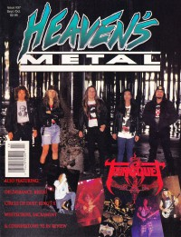

CMnexus
:
Contemporary Christian culture, music, and media.
Magazines
Profiles
Dove Awards
cmnexus.org
CM
nexus
→
Profiles
→
H
→
David S. Hart
David S. Hart
Writing credits listing
Jun 1987 in
CCM
9.12
"The New Idealists"
U2
,
Lone Justice
Jan 1988 in
CCM
10.7
"Heavy Metal Thunder"
Metal
,
Stryper
,
Bloodgood
,
Stryken
,
First Aid
,
Holy Soldier
,
Bob Beeman
"Heavy Metal / Magazines"
Metal
,
Kerrang!
,
Disentombed
,
Faces
,
White Throne
,
HM
,
Metal Forces
,
Powerline
Win 1988 in
YouthWorker
4.4
"Focus On Music"
Spr 1988 in
YouthWorker
5.1
"Heavy Metal Music"
Metal
,
Alice Cooper
, imagery in music
Sum 1988 in
YouthWorker
5.2
"Approach With Caution: Does Music Strengthen Your Faith and Joy?"
Fall 1988 in
YouthWorker
5.3
Focus On Music: persuasiveness of music, effectiveness of messages in music
Win 1990 in
YouthWorker
6.3
"A Clue, not a Club"
musical styles, emotion, and expressions of meaning for youth,
Alice Cooper
,
Madonna
Sum 1990 in
YouthWorker
7.1
Focus On Music: effect of dogma in positions on music debates
Aug 1990 in
CCM
13.2
"Stryper Denies Rolling Stone Reports; Defends New Album"
Stryper
May 1992 in
Heaven's Metal
#35
"Sacrament's Sophomore Waiting Game"
Sacrament
"Hiding In A Haven of Metal"
Haven
"Who is Applehead?"
Applehead
Jun 1992 in
CCM
14.12
"World Class Musician"
Jon Gibson
Jul 1992 in
Heaven's Metal
#36
"Working Hard To Have Fun"
One Bad Pig
Aug 1992 in
CCM
15.2
"Finding Strength in the Midst of Change"
The Violet Burning

Sep 1992 in
Heaven's Metal
#37
"Untwisting Tourniquet"
Tourniquet
Nov 1992 in
Heaven's Metal
#38
"The Home of the Brave"
The Brave
May 1993 in
Heaven's Metal
#41
"The Jesus Freaks' Dues and Don'ts"
Jesus Freaks
Win 1994 in
YouthWorker
10.3
"Beyond Petra: Music on The Fringe"
listing of bands by genre: Techno / rave, Rock and metal, Alternative
Sep 1994 in
Heaven's Metal
#49
"The New King James Version"
King James
,
Rex Carroll
interviewed
Jan 1998 in
HM
#69
"The Story of Eva O"
Eva O
CMnexus
(noun)
The magazine index
of modern music
and Christianity
© 2011 CMnexus. Last updated April 2021.
Contact:
Rants and other correspondence to:
editor -AT- cmnexus
-DØT- org
About